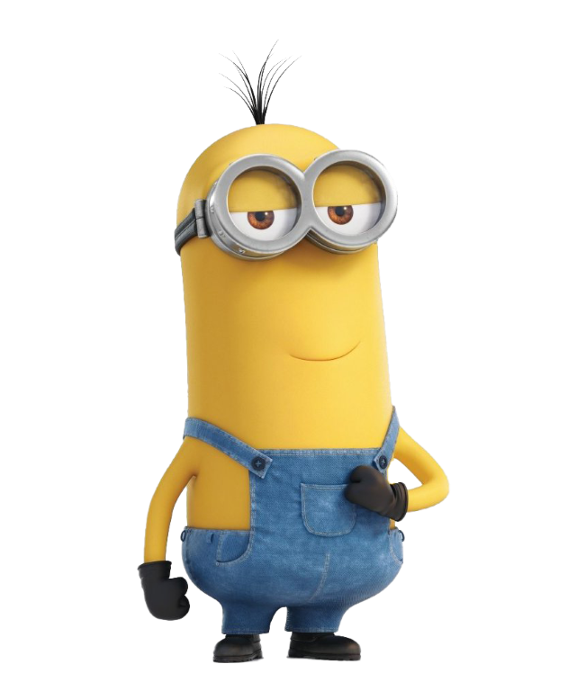

Dave the Minion:

Dave is a popular minion known for being intelligent, kind, caring, and funny, although sometimes accident-prone. He is skilled at video games like his friend Stuart. Dave is recognized for his two eyes and parted combed hair, and he is described as kind, loving, caring, and funny. He excels at playing video games, making cupcakes, other foods, and even weapons. Dave's signature weapon is a rocket launcher, and he has a fondness for ice cream. Additionally, Dave is considered one of the most recognizable minions with his distinctive appearance of two eyes and parted combed hair.